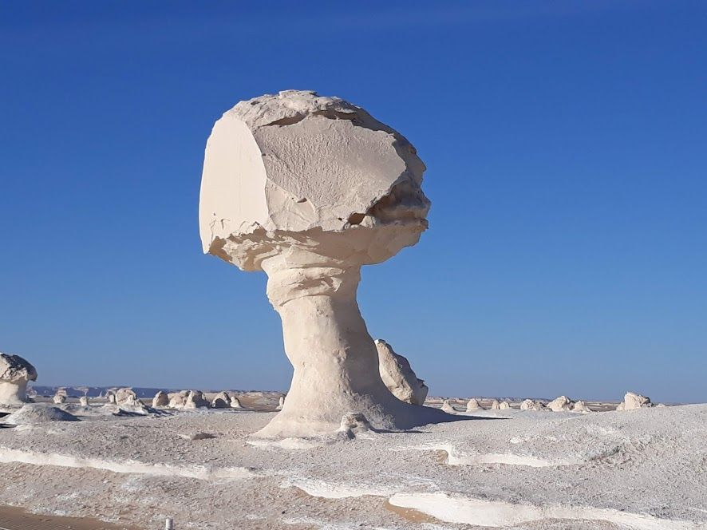

06:10 · Primera luz
Amanecer en las dunas
Sube a la cresta más cercana en silencio mientras la arena pasa del gris al oro.
40 minJunto al campamento

Oasis remotos, antiguas rutas de caravanas y las dunas del Gran Mar de Arena. En 4×4, en camello o a pie, con un equipo local con experiencia y nuestro propio campamento en el oasis de Abu Monkar.
Las reservas se hacen hablando con nuestro equipo: te preparamos la expedición a medida.
Levantamos Sand Gate Camp
 a mano, con tierra y palmera, al borde del oasis: un caravasar para los viajeros entre Farafra y Dajla
a mano, con tierra y palmera, al borde del oasis: un caravasar para los viajeros entre Farafra y Dajla
 y la puerta al Gran Mar de Arena.
y la puerta al Gran Mar de Arena.
En ruta, la luz marca el paso. Salimos antes del calor, descansamos a la sombra a mediodía y montamos el campamento a tiempo de ver cómo el sol se esconde tras las dunas.
Sube a la cresta más cercana en silencio mientras la arena pasa del gris al oro.

Pan hecho al fuego, dátiles, queso y té fuerte antes de cargar los vehículos.
Etapas en 4×4 por campos de dunas, mesetas y tiza blanca, parando donde el paisaje lo pide.

Comida preparada por el equipo a la sombra de una roca o una acacia. El desierto se detiene, y nosotros también.

Un baño en una fuente termal, un paseo por un palmeral o los muros de una fortaleza romana.

Se montan las tiendas, se enciende el fuego y el cielo se llena de más estrellas de las que la mayoría hemos visto nunca.
Dos grandes travesías desde El Cairo y rutas hechas a tu medida, desde un día en el Desierto Blanco hasta varias semanas entre oasis.
Ver todas las expediciones
Desierto Blanco, Gran Mar de Arena y las fortalezas y tumbas romanas de Kharga.

La cueva de Djara, las dunas de Abu Muharriq y las ballenas fósiles de Wadi Hitan.

Rutas privadas o en grupo, en 4×4, en caravana de camellos o a pie, adaptadas a tus fechas.

El Desierto Líbico ocupa dos tercios de Egipto, del Mediterráneo al Gilf Kebir. Sus cinco grandes oasis están habitados desde antes de los faraones y todos fueron paradas de las rutas de caravanas hacia África.
Cada ruta se puede hacer en 4×4, al paso de una caravana de camellos o a pie, y la mayoría combina las tres. Nuestros guías y conductores beduinos marcan el camino; nosotros nos ocupamos de todo lo demás.
Off-road por el Gran Mar de Arena y entre las esculturas de tiza del Desierto Blanco, con salida desde Bahariya.
Al ritmo de las antiguas rutas de caravanas, caminando junto a los camellos y durmiendo donde paraban las caravanas.

Rutas a pie hasta cañones, arte rupestre y ruinas de fortalezas romanas, a un ritmo que deja tiempo para mirar.

En la travesía Cairo – Kharga el paisaje cambia cada día: tiza blanca, mar de arena, oasis de palmeras y, al final, la frontera romana. Cuatro momentos del camino.

La Montaña de Cristal y, por el paso de Agabat, entrada entre las formaciones de tiza.

Amanecer en Agabat, té en Bir Khadra y acampada donde empiezan las dunas.

Día de descanso en Sand Gate Camp: el oasis, Bir Mahmoud y un baño termal.
Una fortaleza romana, sus tumbas y los qanats que llevaban el agua bajo tierra.

Sand Gate Camp ocupa una parcela de 5.000 m² rodeada de unas 80 hectáreas de palmerales y frutales en Abu Monkar. Construido desde 2009 con técnicas tradicionales de tierra, es nuestra base entre los oasis y las dunas.

Cada lugar de acampada se escoge por su abrigo del viento, un horizonte despejado y un buen sitio para ver ponerse el sol.

El equipo cocina sobre las brasas. Se sirve el té, se cuentan historias y nadie mira el móvil.
Lejos de cualquier ciudad, la Vía Láctea se levanta sobre las dunas. Viaja lejos de la luna llena si quieres estrellas, o con ella si quieres ver brillar las dunas.
Conocemos estas pistas porque vivimos en ellas.
Nuestros guías y conductores son beduinos: la gente que siempre ha cruzado este desierto.
Cada vehículo lleva GPS y teléfono satélite. La seguridad no es un extra.
De un solo día a varias semanas: la ruta se construye para ti, no sale de un catálogo.
Travesías poco convencionales: fuertes romanos, templos olvidados, rutas de caravanas.
Organizamos expediciones por el desierto para agencias y operadores especializados en aventura, trekking, fotografía y viajes de naturaleza. Itinerarios cerrados o rutas diseñadas para vuestros clientes.
No hay reservas automáticas: cada expedición se prepara a medida. Cuéntanos fechas, número de viajeros y cómo te gusta viajar, y te respondemos personalmente con disponibilidad y presupuesto.
Atención para reservas de 08:00 a 20:00 (hora de Egipto). ¿Prefieres un formulario? Ir a contacto